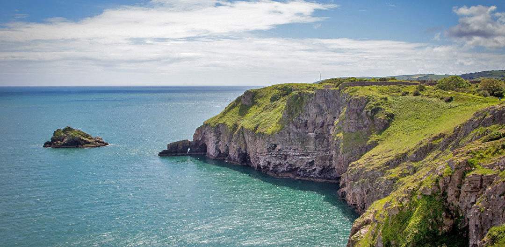
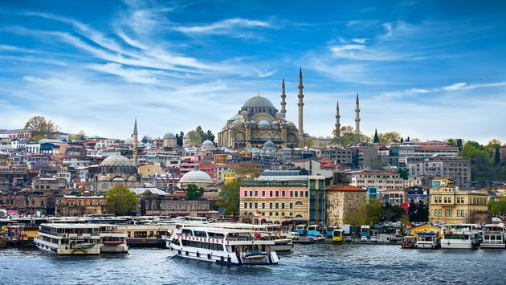

Places I Have Visited
Introduction
Areas in the UK
-
Wales,Snowdonia.

Snowdonia, Wales
-
England,Devon

Devon, England
-
Scotland,Beauly

Beauly, Scotland
Areas outside the UK
-
Turkey,Istanbul

Istanbul, Turkey
-
United Arab Emirates,Dubai

Dubai, United Arab Emirates
Experience within the UK I believe my experience within the UK has been much different as to my experience outside the UK, However this doesnt mean it was a lesser experience as I visited very rural locations and was essentially isolated. It was just me and my family in a isolated house in the middle of a rural area. I believe that this is a unique experience that not a lot of people encounter as it doesnt seem very enticing, However, I believe it to be one of my greatest travel experiences. To be able to get away from the city feels as though it is an escape from reality leaving me relaxed, calm and at peace. Seeing the nature untouched by civilisation which is what makes it such a joyful experience.
Experience outside the UK my exeprience outside the UK was the exact opposite of my experience within the UK. It was two completely different experience make it very to difficult to compare to each other. However. the ability to discover and appreciate the different culutures adn cuisine was a great blessing. The ability to travel with such ease and have fun and enjoy each country to its fullest might mkae the experience slightly better than within the UK. However, this doesnt take anything away from anything within the uk.